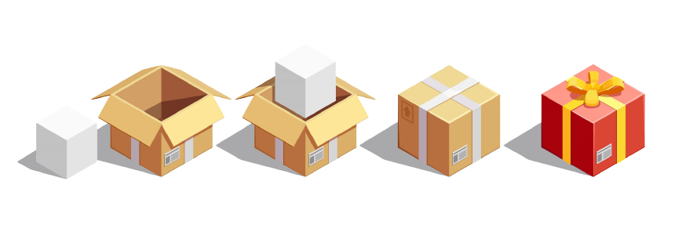

O Product Increment é a soma do trabalho completo que foi realizado durante o Sprint, e é um passo em direção ao objetivo geral do produto. Ele deve ser completamente funcional e testável, e deve atender aos critérios de aceitação estabelecidos pelo Product Owner, que é o responsável por definir e priorizar as funcionalidades a serem desenvolvidas.
Em resumo o Product Increment é uma abordagem da metodologia ágil de desenvolvimento de software, onde o produto é entregue em pequenas partes funcionais, chamadas de incrementos, em ciclos curtos de uma ou duas semanas. Cada incremento deve ser completo e utilizável por si só, permitindo feedback rápido e reduzindo o risco de falha do projeto. No final de cada ciclo, o Product Increment é revisado para determinar os próximos incrementos e ajustes necessários no produto.
Em termos simples, ele se refere a um pequeno pedaço de funcionalidade que é adicionado ao produto em desenvolvimento em cada ciclo de trabalho. Em vez de tentar entregar todo o produto de uma só vez, a equipe divide o trabalho em pequenas partes chamadas de "incrementos" e foca em entregar uma parte funcional do produto a cada ciclo, geralmente em um intervalo de tempo de uma ou duas semanas. Cada incremento deve ser completo e utilizável por si só, mesmo que não tenha todas as funcionalidades planejadas. O objetivo do Product Increment é permitir que a equipe de desenvolvimento obtenha feedback rapidamente e faça ajustes no produto conforme necessário. Isso também ajuda a reduzir o risco de falha do projeto, pois, ao entregar um incremento a cada ciclo, a equipe pode detectar e corrigir erros ou problemas de usabilidade antes que se tornem grandes problemas. Ao final de cada ciclo, o Product Increment é revisado pela equipe, pelo cliente e outras partes interessadas para determinar se atende às expectativas e requisitos, e para definir quais os próximos incrementos serão desenvolvidos. Com cada ciclo, o produto se torna mais completo e funcional, com base nos feedbacks e necessidades dos usuários.
Esqueceu o que são sprints? Clique e volte ao capítulo sobre Sprints!